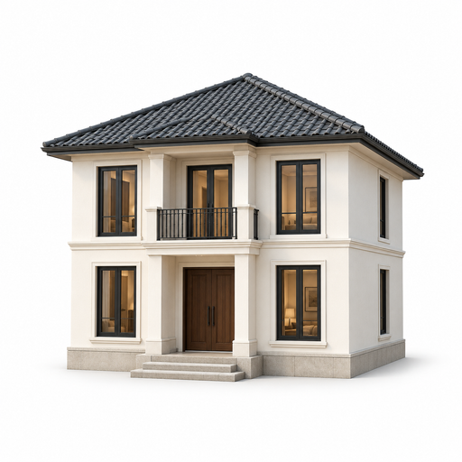

- 在 Safari 中打开房屋点上面的按钮进入漫游。如果从微信打开，请先复制网址到 Safari。
- 添加到主屏幕在房屋页面点 Safari 的分享按钮（方框向上箭头），选择“添加到主屏幕”；若有“作为网页 App 打开”开关，请保持开启，再点“添加”。
- 保存高清资源从主屏幕的“白庙晴庭”图标打开，保持联网和屏幕开启，等“已保存 · 可离线打开”。首次约下载 131 MB，建议使用 Wi-Fi；每部手机分别保存。

白庙晴庭
两层住宅 · 高清家具 · 离线漫游
把手机旋转到横屏，关闭系统的竖排方向锁定。菜单默认收起、默认流畅画质；点“☰ 菜单”选择“自由步行”，左侧摇杆移动、右侧拖动环顾，右下角“加速”开启快走。
联网启动会检查网页新版。资源保存完成后，点“新版已保存 · 点此更新”；也可在菜单中点“检查更新”。分享给朋友时直接发送房屋网址。